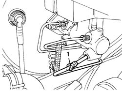
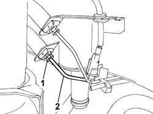

3330E46 RIGID PIPE (ONE) FROM MASTER CYLINDER PUMP TO LEFT FRONT BRAKE - R.R.
- Path
- Procedures > 33 BRAKING SYSTEM > 3330 HYDRAULIC BRAKING SYSTEM > 3330E HYDRAULIC BRAKE SYSTEM PIPES > 3330E46 RIGID PIPE (ONE) FROM MASTER CYLINDER PUMP TO LEFT FRONT BRAKE - R.R.
- Kind
- repair procedure (removal / refitting; the operation number is the code)
- Applies to
- all engines; all production periods
- Interactive page
- https://sloeber94.github.io/elrnDB-fDct/en/#/244001118
Applies to: all engines; all production periods
 Removing
Removing
 Refitting
RefittingOp. 1048A10 AIR CLEANER FILTERING ELEMENT - REPLACE
Op. 5505A13 SUPPLEMENTARY JUNCTION CONTROL UNIT IN ENGINE BAY - R R
Op. 1040A40 PLUG FOR FUEL FILLER PIPE - R + R
Op. 7055B54 UNDER-ENGINE GUARD - R R
Op. 1040A30 OIL SEAL COVER, FLY WHEEL SIDE - R + R AND REPLACE SEALS
- Remove the protective cap from the bleed valve on one of the front brake calipers.
- Connect the recovery device (pipe and reservoir) to the brake caliper bleed valve.
- Operate the brake pedal until the brake/clutch reservoir is drained.
1. Undo the left front brake pipe connector from the master cylinder.
Description | Code | Function | |
|---|---|---|---|
- | Polygonal spanner for brake connector | 1.856.132.000 | Loosen/tighten brake pipe connectors |

Applies to: all engines; all production periods
Op. 4450B02 LEFT FRONT WHEEL R R
Description | Code | Function | |
|---|---|---|---|
- | Polygonal spanner for brake connector | 1.856.132.000 | Loosen/tighten brake pipe connectors |
- Release the rigid pipe from the springs securing it to the bodyshell.
2. Remove the rigid pipe from the master cylinder to the right front brake from the lower part of the engine compartment.

Applies to: all engines; all production periods
Refitting
Removing- Fit the rigid pipe from the master cylinder to the left front brake via the lower part of the engine compartment.
- Tighten the connector for the rigid pipe to the left front flexible brake pipe.
Value - daNm | Fastening | Component | Ø | |
|---|---|---|---|---|
- | 1.2 - 2.2, daNm | nut | - | M10x1 |
- Connect the pipe to the springs near the connector.
Op. 4450B02 LEFT FRONT WHEEL R R
- Lower the vehicle.
- Connect the left front brake pipe connector to the master cylinder.
Value - daNm | Fastening | Component | Ø | |
|---|---|---|---|---|
- | 1.2 - 2.2, daNm | nut | - | M10x1 |
Op. 1040A30 OIL SEAL COVER, FLY WHEEL SIDE - R + R AND REPLACE SEALS
Op. 7055B54 UNDER-ENGINE GUARD - R R
Op. 1040A40 PLUG FOR FUEL FILLER PIPE - R + R
Op. 5505A13 SUPPLEMENTARY JUNCTION CONTROL UNIT IN ENGINE BAY - R R
Topics linked from this page (7)
- 0010T65 HYDRAULIC BRAKE SYSTEM BLEED AIR
- 1040A30 OIL SEAL COVER, FLY WHEEL SIDE - R + R AND REPLACE SEALS
- 1040A40 PLUG FOR FUEL FILLER PIPE - R + R
- 1048A10 AIR CLEANER FILTERING ELEMENT - REPLACE
- 4450B02 LEFT FRONT WHEEL R R
- 5505A13 SUPPLEMENTARY JUNCTION CONTROL UNIT IN ENGINE BAY - R R
- 7055B54 UNDER-ENGINE GUARD - R R